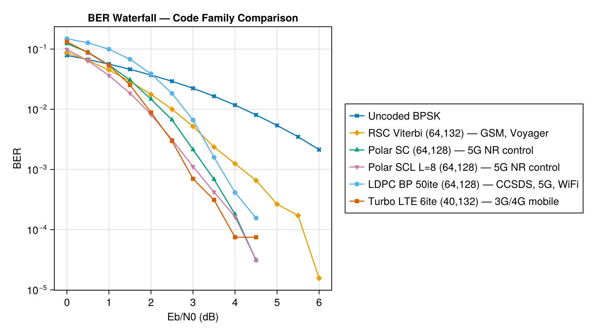

Comparison
BER waterfall comparison of all code families supported by Aff3ct.jl. All codes use short block lengths and standard configurations for a fast docs build.
| Code | K | N | Rate | Key params |
|---|---|---|---|---|
| Uncoded BPSK | — | — | 1.0 | Monte Carlo baseline |
| RSC + Viterbi | 64 | 132 | 0.485 | poly {05,07}, constraint length 3 |
| Polar SC | 64 | 128 | 0.500 | GA frozen bits, design SNR 2.0 dB |
| Polar SCL (L=8) | 64 | 128 | 0.500 | GA frozen bits, design SNR 2.0 dB |
| LDPC BP (50 ite) | 64 | 128 | 0.500 | CCSDS matrix, SPA flooding |
| Turbo LTE (6 ite) | 40 | 132 | 0.303 | poly {013,015}, LTE interleaver |
Simulation: 2000 frames per Eb/N0 point, BPSK over AWGN, fixed seed for reproducibility.
Notes on code families
RSC + Viterbi — The oldest scheme here. Convolutional codes with Viterbi decoding were the workhorse of early digital communications (GSM, deep-space probes). Simple to implement and robust at short block lengths, but their coding gain plateaus well above the Shannon limit.
Turbo (LTE) — Revolutionized coding in the late 1990s by approaching the Shannon limit with iterative decoding of two concatenated convolutional codes. Standard in 3G/4G mobile networks. Performs well even at short block lengths thanks to its interleaver design, though the lower rate (≈ 0.3 here) means more bandwidth overhead.
Polar SC / SCL — The first provably capacity-achieving code family (Arıkan, 2009). Adopted for 5G NR control channels. SC decoding is simple but mediocre; SCL with list size L=8 significantly closes the gap to capacity. Performance scales well with block length, and even at N=128 the SCL decoder is competitive.
LDPC BP — Capacity-approaching codes used in 5G NR data channels, WiFi (802.11n/ac/ax), DVB-S2, and CCSDS deep-space links. Their key advantage is at long block lengths (N ≥ 1000) where the sparse Tanner graph has few short cycles and BP decoding excels. At the short block length used here (N=128), short cycles degrade BP convergence, making LDPC appear worse than the other codes. This is a known limitation — at N=2048+ LDPC rivals or surpasses turbo and polar codes.
Delay and latency
All block codes share a common constraint: the encoder must collect K information bits and the decoder must receive all N coded symbols before processing can begin. Beyond this block delay, the codes differ significantly in how the decoder processes each block.
| Code | Block size (N) | Decoder type | Iterations | Parallelizable | Latency |
|---|---|---|---|---|---|
| RSC + Viterbi | 2(K + m) | Sequential, single-pass | 1 | No | Moderate |
| Polar SC | N (power of 2) | Sequential, single-pass | 1 | No | High |
| Polar SCL | N (power of 2) | Sequential, L paths | 1 | Partial (L paths) | Very high |
| Turbo LTE | 3K + 4m | Sequential BCJR, iterative | 6–10 | No | High |
| LDPC BP | N | Parallel message-passing | 10–100 | Yes | Low per-iteration |
RSC + Viterbi — The Viterbi decoder runs a single forward pass through the trellis followed by a sequential traceback to find the maximum-likelihood path. No iterations are needed, and the trellis has only 2^m states (m = number of memory elements), making this the simplest decoder. Latency is dominated by the block delay itself rather than decoding time.
Polar SC — Successive cancellation decodes bits one at a time in a fixed order, with each decision depending on all previous ones. This strict sequential dependency means the decoder cannot skip ahead or parallelize across bit positions. Complexity is O(N log N), but the serial nature makes it one of the higher-latency decoders despite its simplicity.
Polar SCL — Maintains L candidate decoding paths in parallel, pruning to the L best at each bit position. The L paths can be evaluated concurrently, but the bit-by-bit sequential structure remains. Total work scales as O(L × N log N), making SCL the highest-latency decoder here — the price paid for its much better error performance.
Turbo (LTE) — Each iteration runs two BCJR soft-input soft-output decoders sequentially, exchanging extrinsic information through an interleaver. With 6 iterations, the decoder effectively makes 12 sequential passes over the block. This iterative structure is inherently serial: each pass depends on the soft output of the previous one. The result is high latency but excellent coding gain.
LDPC BP — Belief propagation passes messages between variable nodes and check nodes on a sparse bipartite graph. In the flooding schedule, all messages update simultaneously in each iteration, making BP naturally data-parallel — ideal for hardware implementations. The decoder can also terminate early when all parity checks are satisfied (syndrome = 0), giving it variable and often lower latency than the worst case. This parallelism is why LDPC was chosen for high-throughput standards like 5G NR data channels and 10 Gbps Ethernet.
using Aff3ct, Random, CairoMakie
ebn0_to_sigma(ebn0_db, R) = Float32(1.0 / sqrt(2 * R * 10^(ebn0_db / 10)))
ebn0_range = collect(0.0:0.5:6.0)
n_frames = 2000
seed = 42
# ── Uncoded BPSK ──────────────────────────────────────────────
function run_uncoded(ebn0_db, n_bits; seed=42)
sigma = Float32(1.0 / sqrt(2 * 10^(ebn0_db / 10)))
rng = Random.default_rng(); Random.seed!(rng, seed)
total_be = 0
for _ in 1:n_bits
bit = Int32(rand(rng, Bool))
bpsk = 1f0 - 2f0 * bit
y = bpsk + sigma * randn(rng, Float32)
decoded = Int32(y < 0f0)
total_be += (bit != decoded)
end
return total_be / n_bits
end
ber_uncoded = [run_uncoded(ebn0, 128_000; seed) for ebn0 in ebn0_range]
# ── RSC + Viterbi (K=64, N=132) ──────────────────────────────
function run_rsc(K, ebn0_db, n_frames; seed=42)
n_ff = 2
N = 2 * (K + n_ff)
R = K / N
sigma = ebn0_to_sigma(ebn0_db, R)
enc = RSCEncoder(K, N)
dec = ViterbiDecoder(K, N)
rng = Random.default_rng(); Random.seed!(rng, seed)
total_be = 0
for _ in 1:n_frames
U_K = Int32.(rand(rng, Bool, K))
X_N = encode(enc, U_K)
bpsk = Float32[1f0 - 2f0 * x for x in X_N]
Y_N = Float32[b + sigma * randn(rng, Float32) for b in bpsk]
llrs = Float32[2f0 * y / sigma^2 for y in Y_N]
V_K = decode(dec, llrs)
total_be += count(U_K .!= V_K)
end
return total_be / (n_frames * K)
end
ber_rsc = [run_rsc(64, ebn0, n_frames; seed) for ebn0 in ebn0_range]
# ── Polar SC (K=64, N=128) ───────────────────────────────────
function run_polar_sc(K, N, ebn0_db, n_frames; seed=42)
R = K / N
sigma = ebn0_to_sigma(ebn0_db, R)
fb = generate_frozen_bits_ga(K, N; design_snr=2.0)
enc = PolarEncoder(K, N, fb)
dec = PolarSCDecoder(K, N, fb)
rng = Random.default_rng(); Random.seed!(rng, seed)
total_be = 0
for _ in 1:n_frames
U_K = Int32.(rand(rng, Bool, K))
X_N = encode(enc, U_K)
bpsk = Float32[1f0 - 2f0 * x for x in X_N]
Y_N = Float32[b + sigma * randn(rng, Float32) for b in bpsk]
llrs = Float32[2f0 * y / sigma^2 for y in Y_N]
V_K = decode(dec, llrs)
total_be += count(U_K .!= V_K)
end
return total_be / (n_frames * K)
end
ber_polar_sc = [run_polar_sc(64, 128, ebn0, n_frames; seed) for ebn0 in ebn0_range]
# ── Polar SCL L=8 (K=64, N=128) ──────────────────────────────
function run_polar_scl(K, N, L, ebn0_db, n_frames; seed=42)
R = K / N
sigma = ebn0_to_sigma(ebn0_db, R)
fb = generate_frozen_bits_ga(K, N; design_snr=2.0)
enc = PolarEncoder(K, N, fb)
dec = PolarSCLDecoder(K, N, L, fb)
rng = Random.default_rng(); Random.seed!(rng, seed)
total_be = 0
for _ in 1:n_frames
U_K = Int32.(rand(rng, Bool, K))
X_N = encode(enc, U_K)
bpsk = Float32[1f0 - 2f0 * x for x in X_N]
Y_N = Float32[b + sigma * randn(rng, Float32) for b in bpsk]
llrs = Float32[2f0 * y / sigma^2 for y in Y_N]
V_K = decode(dec, llrs)
total_be += count(U_K .!= V_K)
end
return total_be / (n_frames * K)
end
ber_polar_scl = [run_polar_scl(64, 128, 8, ebn0, n_frames; seed) for ebn0 in ebn0_range]
# ── LDPC BP 50 iterations (K=64, N=128) ──────────────────────
function run_ldpc(H, ebn0_db, n_frames; num_iterations=50, seed=42)
K, N = H.K, H.N
R = K / N
sigma = ebn0_to_sigma(ebn0_db, R)
enc = LDPCEncoder(H)
dec = LDPCBPDecoder(H; num_iterations=num_iterations)
rng = Random.default_rng(); Random.seed!(rng, seed)
total_be = 0
for _ in 1:n_frames
U_K = Int32.(rand(rng, Bool, K))
X_N = encode(enc, U_K)
bpsk = Float32[1f0 - 2f0 * x for x in X_N]
Y_N = Float32[b + sigma * randn(rng, Float32) for b in bpsk]
llrs = Float32[2f0 * y / sigma^2 for y in Y_N]
V_K = decode(dec, llrs)
total_be += count(U_K .!= V_K)
end
return total_be / (n_frames * K)
end
H = LDPCMatrix(joinpath(@__DIR__, "CCSDS_64_128.alist"))
ber_ldpc = [run_ldpc(H, ebn0, n_frames; seed) for ebn0 in ebn0_range]
# ── Turbo LTE 6 iterations (K=40, N=132) ─────────────────────
function run_turbo(K, ebn0_db, n_frames; num_iterations=6, seed=42)
n_ff = 3
N = 3 * K + 4 * n_ff
R = K / N
sigma = ebn0_to_sigma(ebn0_db, R)
enc = TurboEncoder(K, N; interleaver=:LTE)
dec = TurboDecoder(K, N; num_iterations=num_iterations, interleaver=:LTE)
rng = Random.default_rng(); Random.seed!(rng, seed)
total_be = 0
for _ in 1:n_frames
U_K = Int32.(rand(rng, Bool, K))
X_N = encode(enc, U_K)
bpsk = Float32[1f0 - 2f0 * x for x in X_N]
Y_N = Float32[b + sigma * randn(rng, Float32) for b in bpsk]
llrs = Float32[2f0 * y / sigma^2 for y in Y_N]
V_K = decode(dec, llrs)
total_be += count(U_K .!= V_K)
end
return total_be / (n_frames * K)
end
ber_turbo = [run_turbo(40, ebn0, n_frames; seed) for ebn0 in ebn0_range]
# ── Plot ──────────────────────────────────────────────────────
# Replace zeros with NaN for log-scale plotting
safe(ber) = [b > 0 ? b : NaN for b in ber]
fig = Figure(size=(800, 450))
ax = Axis(fig[1, 1];
xlabel="Eb/N0 (dB)", ylabel="BER",
yscale=log10,
title="BER Waterfall — Code Family Comparison")
scatterlines!(ax, ebn0_range, safe(ber_uncoded); label="Uncoded BPSK", marker=:xcross)
scatterlines!(ax, ebn0_range, safe(ber_rsc); label="RSC Viterbi (64,132) — GSM, Voyager", marker=:diamond)
scatterlines!(ax, ebn0_range, safe(ber_polar_sc); label="Polar SC (64,128) — 5G NR control", marker=:utriangle)
scatterlines!(ax, ebn0_range, safe(ber_polar_scl); label="Polar SCL L=8 (64,128) — 5G NR control", marker=:dtriangle)
scatterlines!(ax, ebn0_range, safe(ber_ldpc); label="LDPC BP 50ite (64,128) — CCSDS, 5G, WiFi", marker=:circle)
scatterlines!(ax, ebn0_range, safe(ber_turbo); label="Turbo LTE 6ite (40,132) — 3G/4G mobile", marker=:rect)
Legend(fig[1, 2], ax)
fig